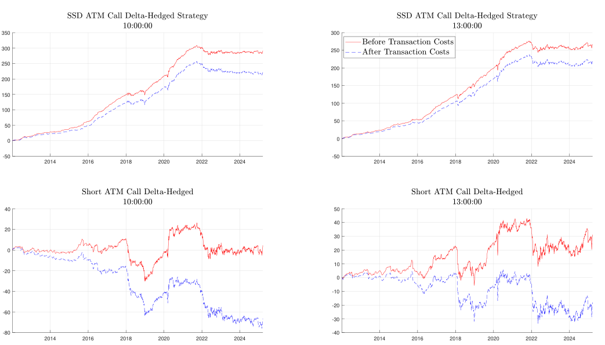

สรุป evidence, limitation, after 2022
บทสุดท้ายรวม paper ทั้งหมดและแยก finding เชิง asset pricing ออกจาก finding เชิง trading
Claim
0DTE options สะท้อน risk preferences ระหว่างวันที่ต่างจาก maturity ยาว โดย upside risk มีราคาสูงผิดปกติและ pricing kernel เป็น U-shape
Evidence
- call returns ลดลงและติดลบเมื่อ strike สูง
- long volatility strategies ติดลบ
- upside VRP ใหญ่กว่าด้าน downside
- pricing kernel U-shape ใน Figure 8
- SSD violations สูงมากใน 0DTE
After 2022
strategy ที่ exploit SSD violations ทำกำไรดีถึงก่อน daily 0DTE availability แต่หลังปี 2022 profitability stagnates สอดคล้องกับตลาดมี liquidity, attention และ integration มากขึ้น

Limitations
- physical distribution ประมาณจากข้อมูล historical
- return ของ 0DTE มี outliers
- trading profitability ไม่คงทนหลังตลาดพัฒนา
- mispricing เป็นนิยามเชิง model/bounds ไม่ใช่ arbitrage
สอบปากเปล่า
- paper นี้ค้นพบอะไรเกี่ยวกับ upside risk
- หลักฐานไหนยืนยัน U-shape
- หลังปี 2022 ทำให้เราตีความ trading result อย่างไร